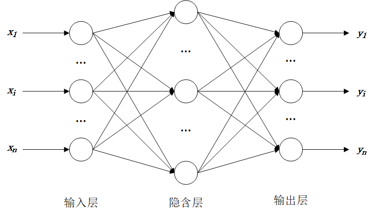

9. 统计分析#
9.1. 线性回归#
使用 Python 做线性回归分析有好几种方式，常见的是用statsmodels库或者sklearn库。
假设有下面的数据存储在 excel 文件 line_regression.xlsx 中：
不良贷款 |
各项贷款余额 |
本年累计应收贷款 |
贷款项目个数 |
本年固定资产投资额 |
|---|---|---|---|---|
0.9 |
67.3 |
6.8 |
5 |
51.9 |
1.1 |
111.3 |
19.8 |
16 |
90.9 |
4.8 |
173.0 |
7.7 |
17 |
73.7 |
3.2 |
80.8 |
7.2 |
10 |
14.5 |
7.8 |
199.7 |
16.5 |
19 |
63.2 |
2.7 |
16.2 |
2.2 |
1 |
2.2 |
1.6 |
107.4 |
10.7 |
17 |
20.2 |
12.5 |
185.4 |
27.1 |
18 |
43.8 |
1.0 |
96.1 |
1.7 |
10 |
55.9 |
2.6 |
72.8 |
9.1 |
14 |
64.3 |
0.3 |
64.2 |
2.1 |
11 |
42.7 |
4.0 |
132.2 |
11.2 |
23 |
76.7 |
0.8 |
58.6 |
6.0 |
14 |
22.8 |
3.5 |
174.6 |
12.7 |
26 |
117.1 |
10.2 |
263.5 |
15.6 |
34 |
146.7 |
3.0 |
79.3 |
8.9 |
15 |
29.9 |
0.2 |
14.8 |
0.6 |
2 |
42.1 |
0.4 |
73.5 |
5.9 |
11 |
25.3 |
1.0 |
24.7 |
5.0 |
4 |
13.4 |
6.8 |
139.4 |
7.2 |
28 |
64.3 |
11.6 |
368.2 |
16.8 |
32 |
163.9 |
1.6 |
95.7 |
3.8 |
10 |
44.5 |
1.2 |
109.6 |
10.3 |
14 |
67.9 |
7.2 |
196.2 |
15.8 |
16 |
39.7 |
3.2 |
102.2 |
12.0 |
10 |
97.1 |
首先使用 pandas 读取 excel 数据：
import pandas as pd
# 读取 excel 数据，引号里面是 excel 文件在 mac 系统电脑的存储位置
datas = pd.read_excel(r'datas/linear_regression.xlsx') # 若电脑是 windows 系统，将符号 / 改为 \
注意
苹果电脑的文件地址用符号
/分割，而 windows 系统的文件地址用符号\分割文件地址前加上
r能够保持字符串原始值的含义，而不对其中的符号进行转义
datas.head()
| 不良贷款 | 各项贷款余额 | 本年累计应收贷款 | 贷款项目个数 | 本年固定资产投资额 | |
|---|---|---|---|---|---|
| 0 | 0.9 | 67.3 | 6.8 | 5 | 51.9 |
| 1 | 1.1 | 111.3 | 19.8 | 16 | 90.9 |
| 2 | 4.8 | 173.0 | 7.7 | 17 | 73.7 |
| 3 | 3.2 | 80.8 | 7.2 | 10 | 14.5 |
| 4 | 7.8 | 199.7 | 16.5 | 19 | 63.2 |
9.1.1. statsmodels 库#
使用statsmodels 库做回归一般有以下几个步骤：
通过 OLS 函数构建回归模型
通过 fit 函数拟合
通过summary 函数输出回归结果
通过 predict 函数得出回归的预测值
OLS 函数的基本用法如下：
| OLS(endog, exog=None, missing='none',**kwargs) | |
|---|---|
| endog | 因变量（内生变量），是一个一维的数组 |
| exog | 自变量（外生变量），是一个一维或多维数组 |
| missing | 出现空值时的处理方式，可选设置为 'drop'（丢掉空值）, 'raise'（提醒错误） |
| **kwargs | 其他设置 |
函数 OLS 默认回归模型没有截距。若模型中有截距，必须对自变量数据使用一个addconstant()函数。
完整代码如下：
import pandas as pd
import statsmodels.api as sm
import matplotlib.pyplot as plt
datas = pd.read_excel(r'datas/linear_regression.xlsx') # 读取 excel 数据，引号里面是 excel 文件的位置
y = datas.iloc[:, 0] # 因变量为第 1列数据
x = datas.iloc[:, 1] # 自变量为第 2 列数据
x = sm.add_constant(x) # 若模型中有截距，必须有这一步
model = sm.OLS(y, x, hasconst=1 ) # 构建最小二乘模型并拟合
results = model.fit()
print(results.summary()) # 输出回归结果
# 画图
# 这行代码使得 pyplot 画出的图形中可以显示中文
plt.rcParams['font.sans-serif'] = ['Heiti TC'] # mac 系统下字体: 黑体 'Heiti TC'， windows 系统黑体 ‘SimHei’
predicts = results.predict() # 模型的预测值
x = datas.iloc[:, 1] # 自变量为第 3 列数据
plt.scatter(x, y, label='实际值') # 散点图
plt.plot(x, predicts, color = 'red', label='预测值')
plt.legend() # 显示图例，即每条线对应 label 中的内容
plt.show() # 显示图形
OLS Regression Results
==============================================================================
Dep. Variable: 不良贷款 R-squared: 0.712
Model: OLS Adj. R-squared: 0.699
Method: Least Squares F-statistic: 56.75
Date: Mon, 24 Jun 2024 Prob (F-statistic): 1.18e-07
Time: 16:43:00 Log-Likelihood: -51.508
No. Observations: 25 AIC: 107.0
Df Residuals: 23 BIC: 109.5
Df Model: 1
Covariance Type: nonrobust
==============================================================================
coef std err t P>|t| [0.025 0.975]
------------------------------------------------------------------------------
const -0.8295 0.723 -1.147 0.263 -2.325 0.666
各项贷款余额 0.0379 0.005 7.534 0.000 0.027 0.048
==============================================================================
Omnibus: 14.277 Durbin-Watson: 2.464
Prob(Omnibus): 0.001 Jarque-Bera (JB): 14.611
Skew: 1.382 Prob(JB): 0.000672
Kurtosis: 5.527 Cond. No. 262.
==============================================================================
Notes:
[1] Standard Errors assume that the covariance matrix of the errors is correctly specified.

tips
若导入包时使用命令 import statsmodels.formula.api as sm, 则在回归分析时不用函数 add_constant 添加截距，但是必须使用统计语言给出模型信息。
使用统计语言公式的代码：
import pandas as pd
import statsmodels.formula.api as sm
import matplotlib.pyplot as plt
datas = pd.read_excel(r'datas\linear_regression.xlsx') # 读取 excel 数据，引号里面是 excel 文件的位置
result = sm.ols('不良贷款~各项贷款余额', datas).fit() # 构建最小二乘模型并拟合，
#此时不用单独输入 x，y了，而是将自变量与因变量用统计语言公式表示，将全部数据导入
print(result.summary()) # 输出回归结果
在多元回归中，只需把自变量改为多列数据即可，假如不良贷款为因变量，从第2列到第5列都是因变量，则使用 statsmodels 包的全部 python 代码如下：
import pandas as pd
import statsmodels.api as sm
import matplotlib.pyplot as plt
datas = pd.read_excel(r'datas/linear_regression.xlsx') # 读取 excel 数据，引号里面是 excel 文件的位置
y = datas.iloc[:, 1] # 因变量为第 2 列数据
x = datas.iloc[:, 2:6] # 自变量为第 3 列到第 6 列数据
x = sm.add_constant(x) # 若模型中有截距，必须有这一步
result = sm.OLS(y, x).fit() # 构建最小二乘模型并拟合
print(result.summary()) # 输出回归结果
OLS Regression Results
==============================================================================
Dep. Variable: 各项贷款余额 R-squared: 0.812
Model: OLS Adj. R-squared: 0.786
Method: Least Squares F-statistic: 30.32
Date: Mon, 24 Jun 2024 Prob (F-statistic): 8.05e-08
Time: 16:43:00 Log-Likelihood: -123.70
No. Observations: 25 AIC: 255.4
Df Residuals: 21 BIC: 260.3
Df Model: 3
Covariance Type: nonrobust
==============================================================================
coef std err t P>|t| [0.025 0.975]
------------------------------------------------------------------------------
const -14.0689 16.072 -0.875 0.391 -47.493 19.356
本年累计应收贷款 3.3001 1.482 2.226 0.037 0.217 6.383
贷款项目个数 4.3596 1.453 3.001 0.007 1.338 7.381
本年固定资产投资额 0.6198 0.285 2.176 0.041 0.028 1.212
==============================================================================
Omnibus: 1.935 Durbin-Watson: 2.147
Prob(Omnibus): 0.380 Jarque-Bera (JB): 1.059
Skew: 0.499 Prob(JB): 0.589
Kurtosis: 3.143 Cond. No. 159.
==============================================================================
Notes:
[1] Standard Errors assume that the covariance matrix of the errors is correctly specified.
9.1.2. sklearn 库#
sklearn 包是机器学习中常见的 python 包，做统计分析时，它并不能像 statsmodels 那样生成非常详细的统计分析结果。默认自变量与因变量数据都是二维数据，自变量或因变量需要增加一个轴。
使用sklearn 库做回归一把有以下几个步骤：
对自变量或因变量增加轴
通过 LinearRegression 函数构建回归模型
通过 fit 函数拟合
通过 predict 函数得出回归的预测值
通过 coef_，intercept_，score 等函数输出统计结果
对于上面同样的例子，一元回归的代码：
Cell In[5], line 1
对于上面同样的例子，一元回归的代码：
^
SyntaxError: invalid character '，' (U+FF0C)
import pandas as pd
import matplotlib.pyplot as plt
import numpy as np
from sklearn.linear_model import LinearRegression
datas = pd.read_excel(r'datas/linear_regression.xlsx') # 读取 excel 数据，引号里面是 excel 文件的位置
y = datas.iloc[:, 0].values # 因变量为第 2 列数据
x = datas.iloc[:, 1].values # 自变量为第 3 列数据
# 将 x，y 分别增加一个轴，以满足 sklearn 中回归模型认可的数据
x = x[:, np.newaxis]
y = y[:, np.newaxis]
model = LinearRegression() # 构建线性模型
model.fit(x, y) # 自变量在前，因变量在后
predicts = model.predict(x) # 预测值
R2 = model.score(x, y) # 拟合程度 R2
print('R2 = %.2f' % R2) # 输出 R2
coef = model.coef_ # 斜率
intercept = model.intercept_ # 截距
print(model.coef_, model.intercept_) # 输出斜率和截距
R2 = 0.71
[[0.03789471]] [-0.82952062]
用 sklearn 做多元回归时，因为自变量本身就是多维数据，不需要增加轴了，但因变量还需要增加轴，全部代码如下：
import pandas as pd
import matplotlib.pyplot as plt
import numpy as np
from sklearn.linear_model import LinearRegression
datas = pd.read_excel(r'datas\linear_regression.xlsx') # 读取 excel 数据，引号里面是 excel 文件的位置
y = datas.iloc[:, 1].values # 因变量为第 2 列数据
x = datas.iloc[:, 2:6].values # 自变量为第 3 列到第 6 列数据
# 将 y 分别增加一个轴，以满足 sklearn 中回归模型认可的数据
# 此时由于 x 是多元变量，则不用添加新的轴了
y = y[:, np.newaxis]
model = LinearRegression() # 构建线性模型
model.fit(x, y) # 自变量在前，因变量在后
predicts = model.predict(x) # 预测值
R2 = model.score(x, y) # 拟合程度 R2
print('R2 = %.3f' % R2) # 输出 R2
coef = model.coef_ # 斜率
intercept = model.intercept_ # 截距
print(model.coef_, model.intercept_) # 输出斜率和截距
R2 = 0.812
[[3.30005331 4.35955755 0.61975042]] [-14.06888312]
多项式回归，广义最小二乘回归，Lasso 回归，逻辑回归，加权最小二乘回归，分位数回归等，都可以在statsmodel库或sklearn库中找到相应的函数。
9.2. 主成分分析#
主成分分析（Principle Component Analysis, PCA）是数据降维的一个方法：原始数据中有很多特征变量，可以采用主成分分析方法将原始数据降维为少数几个变量，主成分就是降维后各原始变量的线性组合系数。
主成分分析的求解一般采用特征根分解，即求解原始数据协方差矩阵或相关系数矩阵最大特征根对应的特征向量，即为第一主成分，第二主成分为第二大特征根对应的特征向量，其他的主成分可以依次得出。主成分贡献率为对应特征根占所有特征根加和的比例。
采用 python 主成分分析时，常用的包为 sklearn，其他一些包也能做（例如 matplotlib.mlab.PCA）。需要注意的是
最好对原始数据进行标准化
sklearn 计算主成分时使用的是协方差矩阵，而不是相关系数矩阵
sklearn 中的标准化函数有：
函数 |
描述 |
|---|---|
scale(X, axis=0, *) |
对数据 X 进行 z 标准化，参数 axis 调整对列或对行标准化 |
StandardScaler() |
z 标准化，列标准化 |
MinMaxScaler() |
最大最小标准化，列标准化 |
MaxAbsScaler() |
最大绝对值标准化，列标准化 |
… … |
举例，下面一个统计数据：
食品 |
衣着 |
居住 |
家庭设备 |
交通通讯 |
文教娱乐 |
医疗保健 |
其他 |
|
|---|---|---|---|---|---|---|---|---|
北 京 |
1736 |
379 |
854 |
327 |
615 |
797 |
504 |
103 |
天 津 |
1171 |
257 |
614 |
117 |
328 |
329 |
179 |
40 |
河 北 |
888 |
156 |
399 |
101 |
222 |
226 |
135 |
39 |
山 西 |
830 |
202 |
201 |
69 |
160 |
280 |
103 |
33 |
内蒙古 |
1054 |
150 |
335 |
84 |
293 |
309 |
176 |
44 |
辽 宁 |
1127 |
221 |
378 |
100 |
301 |
377 |
234 |
68 |
吉 林 |
1003 |
168 |
257 |
82 |
285 |
261 |
194 |
56 |
黑龙江 |
924 |
184 |
527 |
74 |
257 |
277 |
254 |
49 |
上 海 |
2684 |
366 |
1320 |
458 |
748 |
937 |
562 |
204 |
江 苏 |
1569 |
191 |
512 |
168 |
364 |
479 |
199 |
85 |
浙 江 |
2061 |
319 |
914 |
260 |
618 |
723 |
416 |
121 |
安 徽 |
1000 |
117 |
345 |
106 |
197 |
257 |
134 |
41 |
福 建 |
1518 |
187 |
457 |
154 |
366 |
357 |
154 |
100 |
江 西 |
1221 |
125 |
326 |
96 |
230 |
276 |
155 |
56 |
山 东 |
1088 |
160 |
446 |
137 |
294 |
377 |
188 |
46 |
河 南 |
859 |
132 |
318 |
83 |
160 |
178 |
123 |
39 |
湖 北 |
1192 |
125 |
310 |
110 |
223 |
272 |
135 |
62 |
湖 南 |
1433 |
128 |
307 |
114 |
219 |
329 |
168 |
58 |
广 东 |
1789 |
144 |
530 |
152 |
412 |
361 |
204 |
116 |
广 西 |
1187 |
79 |
380 |
95 |
214 |
226 |
123 |
44 |
海 南 |
1135 |
66 |
146 |
92 |
178 |
199 |
93 |
60 |
重 庆 |
1130 |
96 |
231 |
96 |
163 |
250 |
143 |
33 |
四 川 |
1244 |
116 |
234 |
102 |
172 |
225 |
144 |
36 |
贵 州 |
820 |
80 |
236 |
62 |
99 |
161 |
72 |
24 |
云 南 |
976 |
80 |
226 |
67 |
100 |
183 |
122 |
35 |
西 藏 |
1185 |
182 |
84 |
81 |
79 |
28 |
44 |
39 |
陕 西 |
813 |
124 |
212 |
84 |
163 |
297 |
166 |
38 |
甘 肃 |
859 |
92 |
241 |
74 |
155 |
258 |
114 |
27 |
青 海 |
893 |
156 |
329 |
84 |
208 |
110 |
152 |
43 |
宁 夏 |
923 |
143 |
346 |
77 |
178 |
178 |
199 |
51 |
新 疆 |
804 |
171 |
333 |
68 |
183 |
159 |
169 |
36 |
主成分分析的 Python 代码为：
from sklearn.decomposition import PCA
from sklearn.preprocessing import scale
import pandas as pd
import numpy as np
df = pd.read_excel(r'datas/data-pca.xlsx', index_col=0) # 读取数据
data = scale(df.values) # z标准化，标准化之后就自动根据协方差矩阵进行主成分分析了
# data2 = np.corrcoef(np.transpose(data)) # 没有必要单独计算协方差阵或相关系数阵
pca = PCA(n_components = 3) # 可以通过参数 n_components 调整主成分个数
pca.fit(data)
print('特征根：', pca.explained_variance_) # 输出特征根
print()
print('主成分：', pca.components_) # 输出主成分
特征根： [7.32679152 0.46898546 0.16208403]
主成分： [[ 0.34197826 0.32541509 0.36029958 0.36486138 0.3682146 0.36096996
0.35616496 0.34854195]
[ 0.54451489 -0.61527353 -0.11520953 0.11674732 -0.03494752 -0.07480108
-0.2943857 0.4522824 ]
[ 0.27960446 0.69192655 -0.19973533 -0.07235855 -0.02963776 -0.42452329
-0.39881297 0.24037227]]
9.3. Kmeans 聚类#
Kmeans 是一种动态聚类方法，其基本思想是：首先随机选取 K 个点作为初始凝聚点，按照距离最近原则划分为 K 类；然后重新计算 K 个类的重心作为新的凝聚点，再按照距离最近原则重新分类；重复这一过程，直到重心不再变化为止。
对上面的例子，进行 Kmeans 聚类并画图的代码为：
import warnings
warnings.filterwarnings('ignore') # 忽略掉使用默写函数的一些警告信息
import pandas as pd
from sklearn.cluster import KMeans
import numpy as np
from sklearn.preprocessing import MinMaxScaler
# 将上述数据放到 excel 里，并用 pandas 读取
df = pd.read_excel(r'datas/data-pca.xlsx', index_col=0)
scale_values = MinMaxScaler().fit_transform(df.values) # 数据表转化预处理
kmeans = KMeans(n_clusters=3).fit(scale_values) # 分为 3 类, 参数 n_init= 'auto' 设置初始聚类的运行次数
print(kmeans.labels_) # 输出判别结果列表
# 具体输出判别结果
cluster_1 = []
cluster_2 = []
cluster_3 = []
for i, j in enumerate(kmeans.labels_):
if j == 0:
cluster_1.append(df.index[i])
elif j == 1:
cluster_2.append(df.index[i])
else:
cluster_3.append(df.index[i])
print('类别1')
print(cluster_1)
print('类别2')
print(cluster_2)
print('类别3')
print(cluster_3)
# draw pictures by tsne, or pca, 利用主成分降为 2 维，并画图显示分类结果
#from sklearn.manifold import TSNE
from sklearn.decomposition import PCA
import matplotlib.pyplot as plt
tsne = PCA(n_components = 2).fit_transform(scale_values) # tsne
df2 = pd.DataFrame(tsne)
df2['labels'] = kmeans.labels_
df_1 = df2[df2['labels'] == 0]
df_2 = df2[df2['labels'] == 1]
df_3 = df2[df2['labels'] == 2]
# 画图
plt.plot(df_1[0], df_1[1], 'bo', df_2[0], df_2[1], 'r*', df_3[0], df_3[1], 'gD')
plt.show()
[1 2 0 0 0 2 0 2 1 2 1 0 2 0 2 0 0 0 2 0 0 0 0 0 0 0 0 0 0 0 0]
类别1
['河 北', '山 西', '内蒙古', '吉 林', '安 徽', '江 西', '河 南', '湖 北', '湖 南', '广 西', '海 南', '重 庆', '四 川', '贵 州', '云 南', '西 藏', '陕 西', '甘 肃', '青 海', '宁 夏', '新 疆']
类别2
['北 京', '上 海', '浙 江']
类别3
['天 津', '辽 宁', '黑龙江', '江 苏', '福 建', '山 东', '广 东']
9.4. 人工神经网络#
神经网络的目标是：找到一个能把一组输入最好地映射到其正确输出的函数。例如一个简单的分类任务，其中输入是动物的图像，正确的输出将是动物的名称。或者根据历史需求数据，预测未来一期的需求。神经网络的思想类似回归分析中经常用到的拟合，都用到了最小二乘的思想：数学意义上的决策目标是：选取一些参数（神经网络中每个输入的权重），使得拟合的输出与期望输出的误差平方和最小。
下面是一个神经网络示意图（输入层有一些神经元，隐含层有一些神经元，输出层有一些神经元），输入信息经过正向传播到输出，计算实际输出与期望输出的误差后，在反向传播误差；重复这个过程，在传播过程中，不断减少误差，直到误差减少到一定程度终止。

用 BP 神经网络预测 sklearn 包中自带的乳腺癌数据例子：
## 测试一下癌症数据
from sklearn import datasets
from sklearn.preprocessing import StandardScaler
from sklearn.model_selection import train_test_split
from sklearn.neural_network import MLPClassifier
from sklearn.metrics import classification_report
cancer = datasets.load_breast_cancer()
cancer_data = cancer['data']
cancer_target = cancer['target']
# 将数据集划分为训练集，测试集
cancer_data_train, cancer_data_test, cancer_target_train, \
cancer_target_test = train_test_split(cancer_data, cancer_target, test_size = 0.2)
# 数据标准化
stdScaler = StandardScaler().fit(cancer_data_train)
cancer_trainStd = stdScaler.transform(cancer_data_train)
cancer_testStd = stdScaler.transform(cancer_data_test)
# 建立 BP 模型
bpnn = MLPClassifier(hidden_layer_sizes = (20,10), # 神经元隐含层的大小
max_iter = 200, solver = 'adam',random_state=45)
bpnn.fit(cancer_trainStd, cancer_target_train)
# 预测
y_pred = bpnn.predict(cancer_testStd) # 返回预测结果
print('神经网络预测结果评价报告：\n', classification_report(cancer_target_test,y_pred))
神经网络预测结果评价报告：
precision recall f1-score support
0 0.95 0.97 0.96 39
1 0.99 0.97 0.98 75
accuracy 0.97 114
macro avg 0.97 0.97 0.97 114
weighted avg 0.97 0.97 0.97 114
其他常见的机器学习方法，例如随机森林，支持向量机，梯度提升等，都可以在sklearn库中找到相应的函数。
9.5. 练习#
Exercise 9.1
使用python 中的statsmodels库或sklearn库，编程实现《统计学》或《计量经济学》课程上的一些数据分析习题。